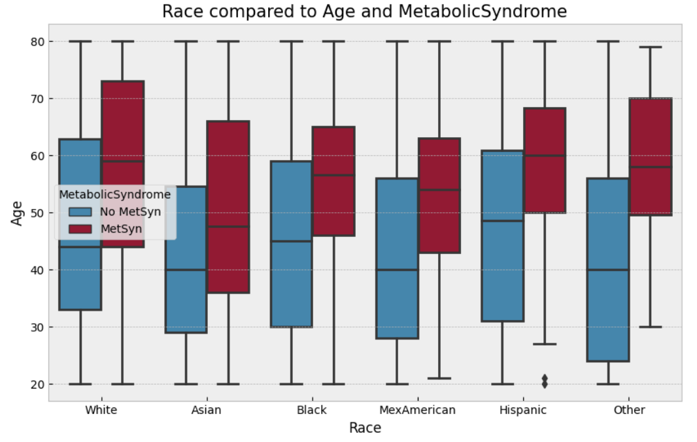
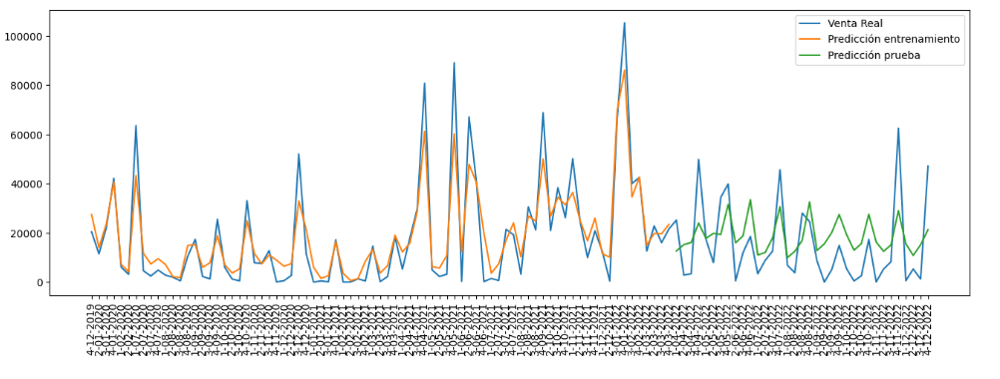
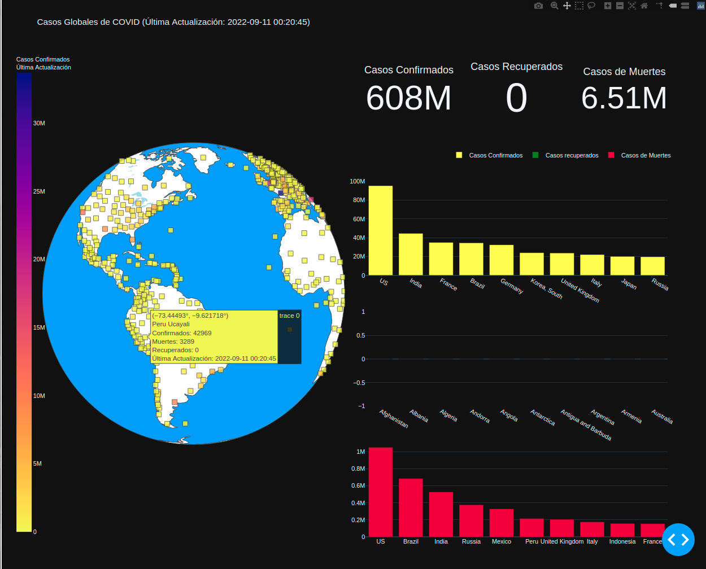

How am I?
Hi there! I am a data scientist/data analyst with a strong passion for leveraging data to drive outcomes.
In my current role, I am responsible for analyzing large datasets, developing predictive models, and communicating insights to stakeholders across the organization. I work closely with cross-functional teams to identify opportunities for growth and improvement, and I pride myself on delivering high-quality solutions that drive real business value.
What I love most about my work is the opportunity to constantly learn and grow. I am always exploring new data science tools and techniques, and I am excited to be a part of an industry that is constantly evolving.
If you're looking for a data scientist/data analyst who is passionate about data-driven decision making and delivering measurable results, I would be thrilled to connect with you!
Metabolic Syndrome Prediction
- Technology
- Python(Sklearn,Pandas,Numpy,Matplotlib,Seaborn)
- Tasks
- ETL (Extract, Transform, Load) process data
- History Telling
- Feature Selection
- The selection of the most optimal training algorithm
- Train the algorithm
- Model evaluation using metrics
- Search for best hyperparameters
- Retrain the model and evaluate again
- ROC analysis
- Summary
- More information in 🔗
Estimation of demand
- Technology
- Python(Sklearn,Pandas,Numpy,Matplotlib)
- SQL
- Tasks
- Connecting SQL with Python
- ETL (Extract, Transform, Load) process
- Feature Selection
- The selection of the most optimal training algorithm
- Train the algorithm
- Model evaluation using metrics
- Adding data through a BCR API that provides inflation indexes
- Retrain the model and evaluate again
Retail Sales
- Technology
- PowerBI
- SQL
- Tasks
- Connecting SQL with Power BI
- ETL (Extract, Transform, Load) process
- "Identification of KPIs (Key Performance Indicators)
- Creation of calculated measures using DAX
- Interface modeling
- Upload project to the Power BI cloud and configuration of the gateway for automatic updates
Book review
- Technology
- PowerBI
- SQL
- Tasks
- Connecting SQL with Power BI
- ETL (Extract, Transform, Load) process
- "Identification of KPIs (Key Performance Indicators)
- Creation of calculated measures using DAX
- Interface modeling
- Upload project to the Power BI cloud and configuration of the gateway for automatic updates
COVID Map
- Technology
- Python(Pandas,Plotly,Requests)
- HTML
- Tasks
- Data collection through an API
- Modeling the data into a data frame
- Data cleaning
- Identifying the indicators to display
- Performing the preliminary design of the dashboard
- Deploying the dashboard on a web
- More information in 🔗
Broken Tooth Detection
- Technology
- Python(Tensorflow,OpenCV,Numpy,Flask)
- HTML
- CSS
- Tasks
- Collection of a diverse set of images that show buckets with broken teeth.
- Labeling of areas where the detection failures can be observed.
- Training of the neural network with the labeled images.
- Evaluation of the model to assess the accuracy and effectiveness of the prediction
- Deployment of the model through a web application to enable integration with other frameworks that trigger alerts.
- More information in 🔗
Human Pose Estimation
- Technology
- Python(Tensorflow,OpenCV,Numpy,Protobuf)
- Tasks
- Selection of a pre-trained algorithm to adapt it to the current model
- Adapt the program to the current need
- Ability to integrate it with people detection for personnel counting, occupancy monitoring, development of autonomous vehicles.
Centralized page for reports
- Technology
- Python(Pandas,Numpy,Flask)
- SQL
- HTML
- CSS
- Power BI
- Tasks
- Connecting SQL with Python
- Authentication interface and connection with the user database
- Implementation of views and centralization of links to reports
- User testing for compliance
- Deployment to production of the centralized website
- More information in 🔗